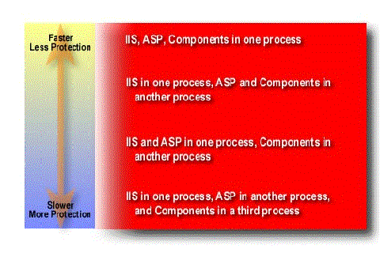

|
| ||
|
| ||
Ron Wodaski
Microsoft Corporation
August 27, 1998
Contents
Introduction
Language Independence
Development with Scripts
Built-in and Installable Objects
Databases and Cookies
Transactions on the Web
Isolated Processes
Security
Creating Client/Server Web Applications
This article provides an overview of Active Server Pages (ASP) technology, a technology made available by Internet Information Server (IIS). The ASP features described in this article are available in IIS version 4.0. After walking through the highlights of ASP features, I provide a section on how those features fit together to create client/server Web applications.
Although links to further information are provided in each section, I recommend further reading overall in the IIS 5.0 SDK documentation (click "view in frame").
Active Server Pages (ASP) technology is language-independent. Two of the most common scripting languages are supported right out of the box: VBScript and JScript™. Support for other scripting languages, such as Perl, is available. Whatever scripting language you use, you can simply enclose script statements in special delimiters for ASP. The starting delimiter is <%, and the closing delimiter is %>. Delimiters are discussed further in Development with Scripts.
Using VBScript on the server in an ASP page isn't very different from using it in applications or on ordinary Web pages. Nearly all of the VBScript commands are available for use on the server. VBScript commands that interact with the user, however, are not available. For example, imagine a command that opens a dialog box on the server. No one is around to dismiss it, and the system can do nothing until someone dismisses it!
The VBScript statements that present user interface elements are InputBox and MsgBox. In addition, the VBScript function CreateObject is replaced by a method of the Server object. This is necessary to track the object instances on the server side. You can add comments to your script just as you normally do. However, you cannot add comments inside an output expression. An output expression is an expression or value that is evaluated and written to the Web page. It is contained within the delimiters <%= and %>.
The rules for using JScript are very similar to those for VBScript. The delimiters are the same, for example. As with VBScript, you cannot use user interface statements such as the Alert statement.
The way you use JScript on the server side is nearly identical to the way you use it on the client side. As on the client side, JScript on the server is case-sensitive. The rules for case in server-side scripts are:
You can also add support for other scripting languages, such as Perl, to IIS. See the IIS SDK documentation (click "view in frame").
Scripting languages are great for creating applications quickly. Compared to formal programming languages, you generally need far fewer lines of script to accomplish a task. Now that Dynamic HTML and the Document Object Model have arrived, you can even combine server-side and client-side scripting to quickly develop a prototype of your ideas.
Or perhaps you simply want to serve Web pages that are sensitive to the features supported by a particular browser version. This applies to different versions of a single browser (Internet Explorer 3. x and 4.0, for example), different operating systems (Windows® and UNIX, for example), and to completely different browsers (such as Navigator and Internet Explorer). You can create scripts that are appropriate for each browser, and invoke the appropriate commands to serve pages uniquely suited to the features of any browser. The Browser Capabilities object provides detailed information about the features supported for each browser version. For example, you can design an application for Internet Explorer 4.0 that displays different HTML code for down-level browsers such as Internet Explorer 3.02, or for alternate browsers, such as Netscape Navigator. This enables you to maintain one set of content pages, with conditional browser detection for features on different browsers built right into each page.
You can do a lot of development with scripts. You can incorporate business rules, for example, into a complete client/server or multitiered business application such as a telemarketing sales application. Or you can simply verify that a visitor has been to your site before and recall preferences for that user.
One way to think about ASP pages is that they are really just HTML pages with extra stuff added. You can develop your basic pages the way you always have -- as Web pages, and add the appropriate scripting for whatever browsers or business rules you require. You can:
It couldn't be easier to convert an existing HTML page to an ASP page -- just change the extension from .htm/.html to .asp. Of course, it won't be a meaningful ASP page until you add some scripting commands. The .asp filename extension enables IIS to parse and execute the scripts in your files.
Keep in mind that IIS and ASP run on Windows NT® Server. You can create an intranet that functions in your local area network, or serve pages across the Internet by connecting your server to the Internet. You can integrate any of the IIS 4.0 features into your ASP pages, such as using Microsoft Transaction Server to safely commit or abort transactions that span multiple computers.
If you have any experience with Visual Basic®, Visual Basic for Applications, Visual Basic Scripting Edition (VBScript), JScript, or JavaScript, you can build Active Server Pages with a scripting language you already know. This means you can be up and running with ASP quickly. The key is to place ASP scripts in delimiters:
<HTML> <BODY> <P>The current date and time on the server: <%= Now %>.</P> </BODY> </HTML>
The result will look like this:
The current date and time on the server: 8/24/98 11:40:02 AM.
You can use various script statements to control what appears on the Web page. The following example shows how to change the output based on the time of day, but you can use any conditional statement with whatever criteria (user's name, current database record, script language supported by the visitor's browser, and so forth) to control output to the Web page.
<% If Time >= #12:00:00 AM# And Time < #12:00:00 PM# Then strGreeting = "Good Morning!" Else strGreeting = "Hello!" End If %> <P><%= strGreeting %></P>
Two styles for using delimiters are shown in the above code sample. The five lines of code that constitute the If statement are set off from the delimiters using line breaks. The variable strGreeting in the last line of the sample is a single line, and is enclosed within delimiters on the same line. As a general rule, your code will be more readable if you follow these two style rules:
Most of the functionality you can build into an ASP page comes from objects on the server. IIS 4.0 comes with some built-in objects, as well as a number of installable objects. You can also use objects created by a developer you know, or create and use your own objects.
Six objects come built-in with IIS 4.0. These objects enable your pages to communicate effectively with the server, the application, the current session, and the user:
Use the built-in objects just like any other object in a script; by accessing properties, methods, and events. For example, the general format for using the Request object looks like this:
Request[.Collection](variable)
Here is the Request object in action, being used to write a form field's value on a Web page:
<P>The value of 'strFirstName' is
<%= Request.Form("strFirstName") %></P>
The collections available for the Request object are:
IIS 4.0 comes with a variety of installable objects, and you can also use your own custom objects on the server side. The installable objects include:
IIS 4.0 and ASP make it easy to access data and put it on a Web page. You can simply display data from an ODBC-compliant database, or you can use ASP to make decisions about what to display on Web pages. Here's the process:
You can use cookies, as well as session and application variables, to store and retrieve information. IIS makes cookie values available to you with the Request object's Cookies collection. You can set cookie values with the Response object. Because IIS sends all header information before the document content, you must set cookies before the <HTML> tag. For example, to check the value of a cookie, you can use this code:
<%
Dim strNameCookie
strNameCookie = Request.Cookies("nameCookie")
%>
and then set some session variables based on the cookie value. You can use default values if there is no nameCookie, or the existing cookie values if there is a nameCookie:
<%
If strNameCookie = "" Then
Session("strDefaultPage") = ""
Session("strDefaultLevel") = "1"
Else
Session("strDefaultPage") = Request.Cookies("pageCookie")
Session("strDefaultLevel") = Request.Cookies("levelCookie")
End If
%>
PCs have become much more powerful recently, and so have servers. This makes multitier client/server computing possible. By arranging functionality into neat packages called transactions, it is possible to involve more than just the client and server computers in the process. Thus the key to using the Internet for major application development is support for these transactions. This isn't easy to do, because transactions typically involve processes on multiple computers, and a method is needed to coordinate all those computers safely and reliably.
In very simple terms, a transaction acts like an international diplomat. For anything to happen in a transaction, every single party to the transaction has to agree that it is okay to proceed. The following table shows the parallels between the components that make up Microsoft Transaction Server and international diplomacy.
| MTS Feature | Description | Diplomatic Equivalent |
| IIS 4.0 and Microsoft Transaction Server | Provide a runtime environment for transaction processing. | Deciding on the negotiation location and size of the table to be used for the negotiations on the new treaty. |
| Distributed Transaction Coordinator (DTC) | Setting up coordinator software to oversee transactions. | Selecting a diplomat to chair the meetings about the treaty. |
| Distributed Processing | Checking to make sure that every computer involved is ready to process a transaction. | Robert's Rules of Order. |
| Transaction List in the DTC | Monitoring transactions to make sure they process correctly. | Sending diplomatic pouches to and fro. |
| Forcing transaction completion | Manually committing or aborting transactions. | Shuttle Diplomacy used when talks break down and confusion reigns. |
Transactions are the key to client/server and multitier applications on the Web. Microsoft Transaction Server monitors all aspects of a transaction, across all of the computers that are involved in the transaction. The Distributed Transaction Coordinator (DTC) monitors every aspect of every transaction on every computer involved. This two-way communication insures that the transaction gets completed, and that records of the transaction agree across all computers.
For example, consider an order entry system consisting of these key parts:
In the past, such a system would require extensive development time and installation of a variety of networking connections. By using Microsoft Transaction Server, IIS 4.0, ASP, and the Internet, development time and costs are greatly reduced. Cost reductions result from:
For more information, see IIS 4.0 and MTS 2.0.
IIS 4.0 enables you to run each of your Web applications in an isolated process on the server. To isolate an application, select "Run in separate memory space" on the application directory's property box.
An isolated application runs in its own memory space on the server. This memory is available only to that specific application; no other application can access that memory space. If a problem develops in the application, there is no way for it to "invade" the memory space of other applications, or of any other software running on the server. Isolation prevents one application from dragging down other applications (or the server) if it crashes. It's a little like having multiple computers -- virtual machines -- running on one server.
Using isolated processes affects the performance of your applications. There are four scenarios available for process isolation:

Figure 1. Process isolation options
For more information, see the Active Server Components articles in the Server Technologies section and Component Development (click "show contents" from default.asp) section of Web Workshop.
With the Security features of Windows NT and IIS, you can implement a security plan that is customized and very safe.
Windows NT Server 4.0 provides a high level of security for your Web services. The access permissions of Windows NT File System (NTFS) provides the foundation for Web security. You can define access for individual users or for groups of users, and provide a default level of access for general users. With NTFS, you can:
In addition, you can provide content ratings to warn users about objectionable content, and configure your Web server to use the powerful security features of Secure Sockets Layer (SSL).
Once you have set permissions for your site, folders, and files, there are several ways to authenticate visitors to your Web site.
Encryption is a process that scrambles your content so that it is very, very difficult to unscramble -- unless you have a key, in which case it's easy and straightforward. When a user establishes a secure connection with your server, encryption is used to make the content unreadable to anyone who might be able to intercept it. This allows private information to stay private as it moves back and forth between client and server. You can use the Key Manager to create, import, and export SSL (Secure Sockets Layer) encryption keys.
For more information on security, see the Security Technologies (click "show contents" on default.asp) area of Web Workshop and the Microsoft Security Advisor site  . For more information on IIS security, see IIS Security
. For more information on IIS security, see IIS Security  and the IIS Security FAQ
and the IIS Security FAQ  .
.
ASP technology makes it easy to create complete Web-based applications. You don't have to use the full breadth of ASP technology on your Web pages, of course; you can simply use ASP as a template language to create flexible, easy-to-maintain Web pages. Or you can create a client/server application: define a directory for the application, and all files in that directory (and in all of its sub-directories) exist as an application. Pages can communicate with each other, or with the application object. This is possible because you can persist selected information across a user session and/or the entire application as needed.
A typical application can include Web pages, databases, controls, server-side scripts, client-side scripts, multiple servers, and transactions. The first visitor to the application starts the application, and each visitor has a unique session. You can create just about any kind of application because of the multiple levels of control available to you: scripts, built-in ActiveX components, third-party components, custom components of your own, databases, and transactions.
Other key features of applications include:
The Session object enables you to communicate effectively between the pages of your application, and to store information about visitors so you can easily retrieve it on their next visit.
Each visitor to your site has a Session object with a unique session ID. You can use the Session object to maintain information about that user during the session. The session ID is stored in a cookie, and you can add/read your own cookies as needed. You can use the session ID cookie to rebuild session information from one session to the next. For example, if a user visits your site and establishes preferences that you store in a database, you can use the session ID cookie to read the correct database information every time that visitor returns to your site. This makes it easy to create a "personalized" Web site.
You can store variables in the Session object that have session scope. That means you can access the variable from any page in the application that the user visits. You can also establish handlers for the session start and end events, integrate forms into your sessions, and so forth.
For more information, see Managing Session State in a Web Farm.
Did you find this material useful? Gripes? Compliments? Suggestions for other articles? Write us!
© 1999 Microsoft Corporation. All rights reserved. Terms of use.